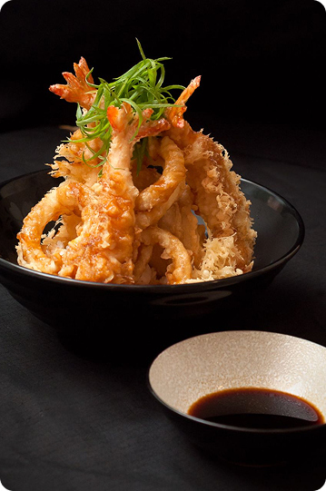
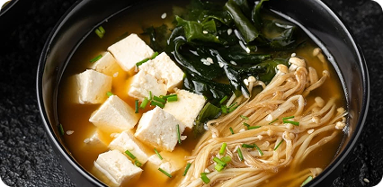
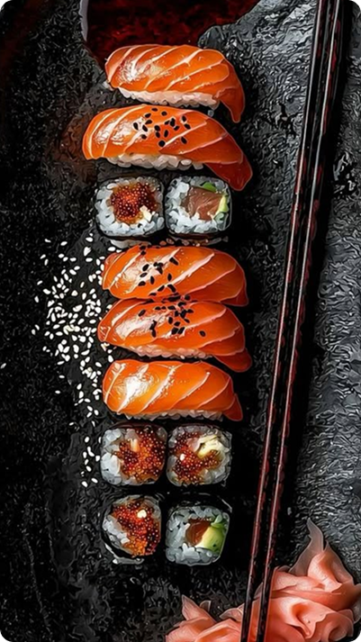
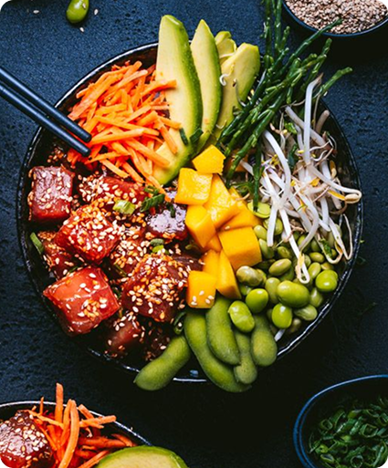
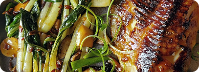
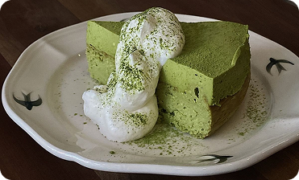
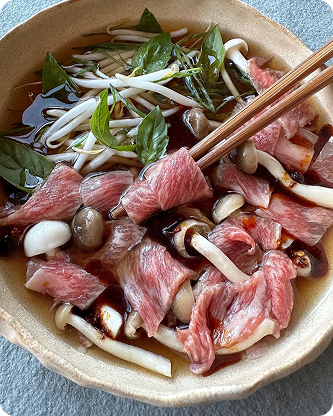
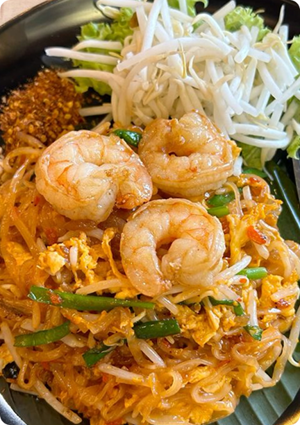

MENU
Browse Ezo’s menu by cuisine: Japanese sushi and entrees, Vietnamese phở and noodle bowls, and Thai curries and salads. Prices and dietary tags included.
Choose a cuisine to begin. Each dish shows where it comes from and what is in it.
V vegetarian · VG vegan · GF made with gluten-free ingredients · N contains nuts or peanuts · SF contains shellfish · RAW served raw or lightly seared
Tags are a guide. Please tell your server about any allergy.
Also on the Menu
Dishes from other traditions, labeled honestly.
Crab Rangoon · $12 · SF. Crispy wontons filled with crab and cream cheese, with sweet chili sauce. American-Chinese classic.
Crispy Peking Duck · $44. Slow-roasted duck with pancakes, hoisin sauce, and scallions. Chinese dish from Beijing.
Lychee Sorbet · $9 · VG, GF. Light lychee sorbet with fresh mint. Lychee grows across southern China, Vietnam, and Thailand.
Nigiri, sashimi, rolls, and miso black cod at Ezo, made by chefs trained in Los Angeles, Tokyo, and Kyoto.
Starters & Salads
Edamame · $8 · VG, GF.
Steamed soybeans with sea salt. Japanese.
Tuna Tataki · $17.
Lightly seared tuna with ponzu, daikon, and scallions. Maguro no tataki: “tataki” means seared and sliced.
Shiso Tempura Shrimp · $16 · SF.
Crispy shrimp tempura wrapped in shiso leaves, with soy dipping sauce. Shiso is a Japanese herb.
Spicy Tuna Tartare · $18 · RAW.
Diced spicy tuna with avocado, cucumber, and crispy wontons. Japanese-inspired.
Seaweed Salad · $9 · VG.
Fresh seaweed with sesame dressing. Japanese.
House Salad · $8 · VG.
Mixed greens, cucumber, carrot, and daikon with sesame-ginger dressing. Japanese-American style.


Soups & Noodles
Miso Soup · $5.
Traditional miso broth with tofu, seaweed, and scallions. Japanese.
Tempura Udon · $21 · SF.
Thick udon noodles in a light dashi broth with shrimp tempura and scallions. Japanese.
Sushi Rolls
Spicy Tuna Roll · $13 · RAW.
Tuna, spicy mayo, and cucumber.
California Roll · $12.
Crab stick, avocado, and cucumber. Japanese-American, created in North America.
Dragon Roll · $18.
Eel, avocado, cucumber, and eel sauce.
Rainbow Roll · $19 · RAW.
California roll topped with assorted sashimi.
Tempura Shrimp Roll · $16 · SF.
Crispy tempura shrimp, avocado, and spicy mayo.
Ezo Signature Roll · $21 · RAW.
Spicy tuna, avocado, and cucumber, topped with seared salmon and miso glaze.
Tropical Roll · $18 · SF.
Shrimp tempura and avocado, topped with mango-and-pineapple chili sauce.
Crispy Volcano Roll · $17 · SF.
Spicy crab mix and avocado, deep-fried and topped with eel sauce and spicy mayo. Japanese-American.
Shiso Garden Roll · $14 · V.
Cucumber, avocado, pickled radish, and shiso leaf wrapped in soy paper.


Sets, Bowls & Platters
Add miso soup or house salad for $4.
Sushi Lunch Set · $24 · RAW (lunch, Tue–Fri).
Five pieces of chef’s choice nigiri and a California roll, with miso soup.
Teriyaki Salmon Bowl · $25.
Grilled salmon with teriyaki glaze, steamed rice, and sautéed vegetables.
Poke Bowl · $23 · RAW.
Marinated tuna or salmon, seaweed, avocado, and edamame over sushi rice with sesame and soy. Hawaiian dish.
Chef’s Choice Sushi Platter · $48 · RAW.
Ten pieces of the freshest nigiri and a tuna roll.
Sashimi Platter · $46 · RAW.
Twelve pieces of assorted sashimi with wasabi and soy sauce.
Entree
Grilled Miso Black Cod · $38.
Marinated black cod grilled to perfection, with steamed rice and sautéed bok choy. Inspired by gindara saikyō-yaki.


Desserts
Mochi Ice Cream · $9 · V.
Chewy rice cakes filled with mango, green tea, or strawberry ice cream. Japanese-American.
Matcha Cheesecake · $11 · V.
Creamy green tea cheesecake with a crispy cookie crust.
Wagyu phở, gỏi cuốn, and lemongrass noodle bowls at Ezo, cooked by a chef who trained in Vietnamese kitchens.
Vietnamese cooking is about balance: fresh herbs, bright lime, and deep, clear broth.
Vietnamese Summer Rolls · $12 · SF, N.
Gỏi cuốn. Shrimp, vermicelli, lettuce, and herbs wrapped in rice paper with peanut-hoisin dipping sauce.
Vietnamese Grilled Pork Skewers · $15.
Thịt nướng xiên. Marinated pork skewers with pickled vegetables and dipping sauce.
Phở with Wagyu Beef · $26.
Phở bò. Traditional Vietnamese broth with thin slices of wagyu beef, rice noodles, fresh herbs, and lime. Phở: Vietnamese noodle soup.
Vietnamese Vermicelli Bowl · $21 · N.
Bún. Grilled lemongrass chicken or beef, vermicelli noodles, herbs, lettuce, and crushed peanuts with nước chấm dressing.

Green curry, som tam, pad Thai, and mango sticky rice at Ezo, cooked by a chef who trained in Thai kitchens.
Thai cooking balances sweet, sour, salty, and spicy in every bite.

Thai Fish Cakes · $13.
Tod mun pla. Deep-fried fish patties with cucumber relish.
Thai Chicken Satay · $14 · N.
Sa-té gai. Grilled marinated chicken skewers with peanut dipping sauce.
Papaya Salad · $14 · N, SF.
Som tam. Shredded green papaya with lime, peanuts, dried shrimp, and chili. Spicy.
Grilled Thai Beef Salad · $19.
Yum neua. Grilled beef slices with fresh herbs, mixed greens, and lime dressing.
Pad Thai Lunch Bowl · $19 · N (lunch, Tue–Fri).
Phat Thai. Stir-fried rice noodles with tofu, egg, peanuts, bean sprouts, and tamarind sauce. Choose shrimp, chicken, or tofu.
Thai Green Curry · $27.
Gaeng keow wan. Creamy coconut curry with chicken, bamboo shoots, bell peppers, and Thai basil, served with jasmine rice.
Coconut Sticky Rice with Mango · $12 · VG, GF.
Khao niao mamuang. Sweet sticky rice with ripe mango and coconut sauce.